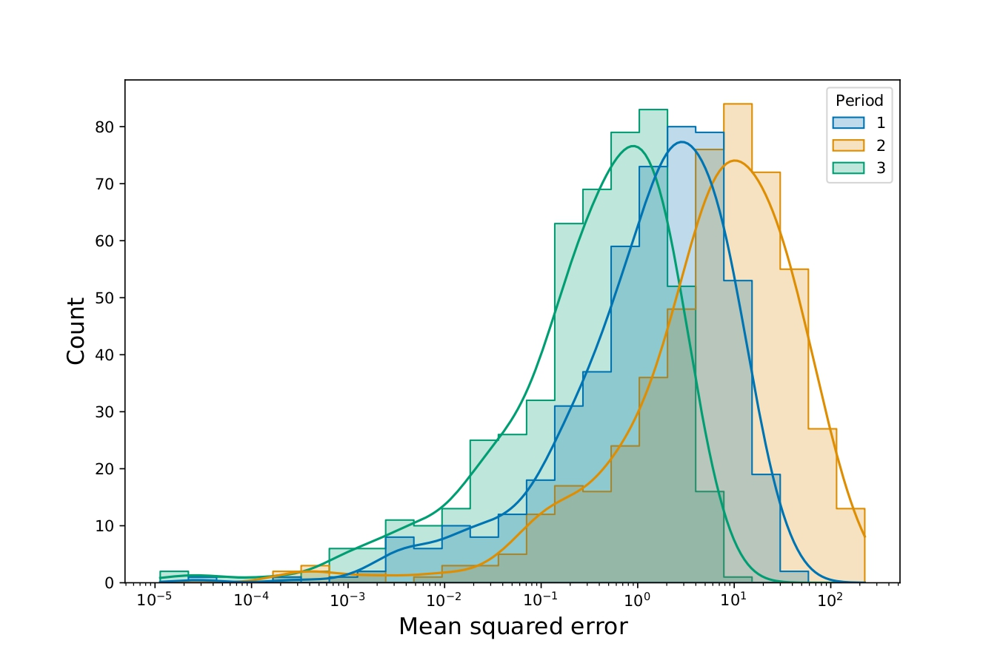
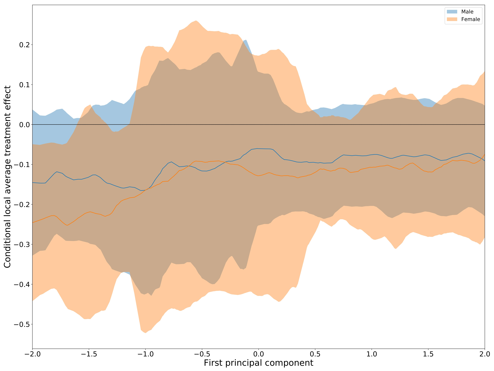

Structural breaks in predictive modelling
Introduction
As part of a seminar in applications of machine learning, I devised a method to detect structural breaks in prediction or classification problems with repeated cross sections. In Figure 1, I display the central idea of how structural breaks between time-periods causes a change in the distribution of the mean squared error between time-periods.

Abstract
A novel method to detect structural breaks in classification or prediction problems with repeated cross sections is proposed. The theoretical foundation is presented and the power and robustness of the method in a specific use case is showcased with a simulation study. The method utilizes that the generalization error of a model is an IID sample from a distribution which can only change between periods if the data generating process changes. Utilizing holdout data in each period, any changes in performance can then be attributed to a structural break in the data. This is tested utilizing tests for equality of means between the samples.
The effect of education on health
Introduction
As part of a seminar in empirical health economics, I examined the effect of education on late-life depressive symptoms with a focus on heterogeneity across socio-economic status. I use instrumental variables with compulsory schooling reforms to obtain exogenous variation across european countries, principal component analysis to create a continuous measure of socio-economic status and causal forests to estimate conditional local average treatment effects. As the conditional local average treatment effects vary across countries and other covariates and are generally associated with wide confidence intervals, the main conclusion is that further research is needed before conclusions about the influence of education on late-life depressive symptoms can be made. The main finding can be seen in Figure 2, where the wide confidence almost always include a null effect.

Abstract
I provide new evidence on the causal effect of education on health using compulsory schooling reforms to obtain exogenous identification of education. I estimate the local average treatment effect to be a reduction in depressive symptoms by 0.11 per extra year of education induced by the schooling reforms, but the effect is not statistically significant. I show that there exists a lot of heterogeneity in the effect sizes, with the most robust finding being that women benefit most from additional education, but also observe indications that people with lower socioeconomic status also benefit more. However, all of the findings are associated with wide confidence intervals. The large amounts of heterogeneity, which varies across countries and other covariates, indicate that one should be wary of extrapolating findings in the literature to new settings without further research.